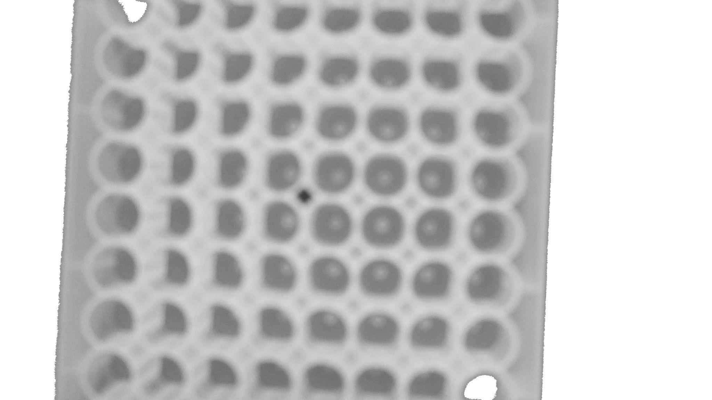
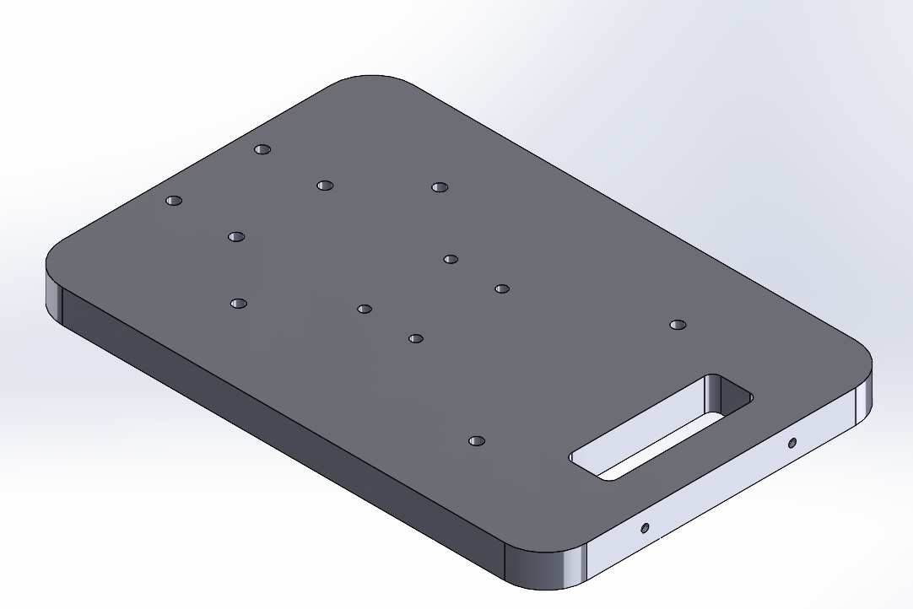
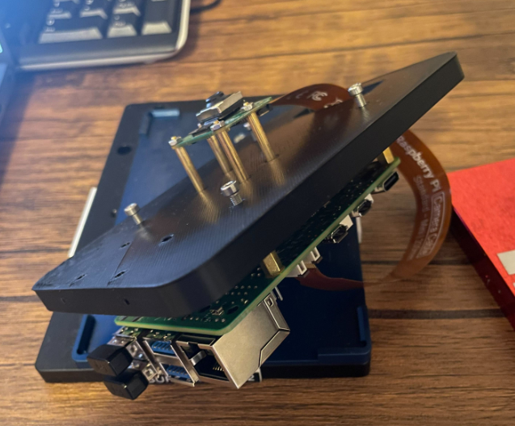
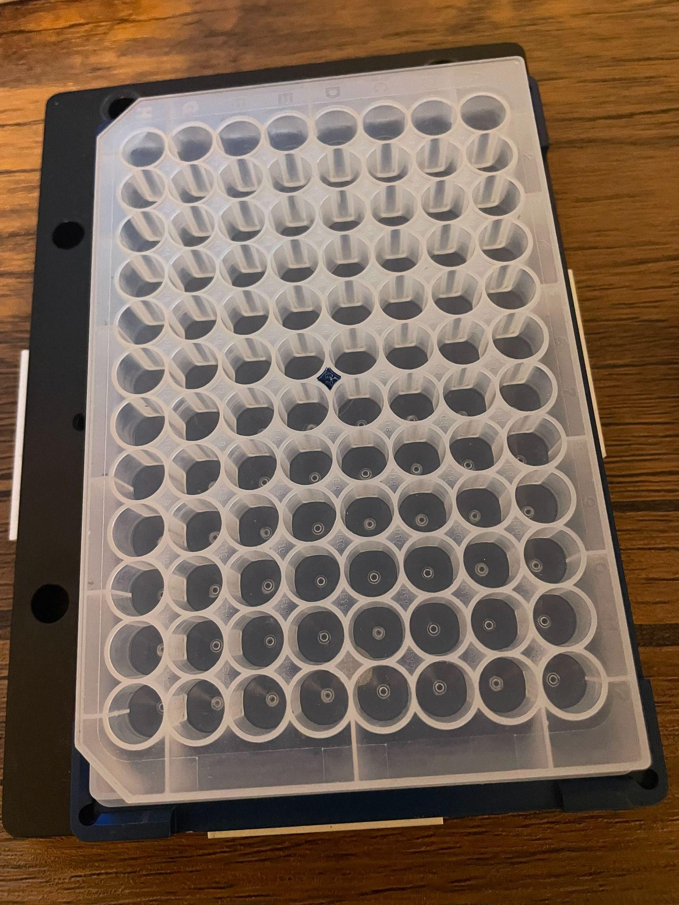
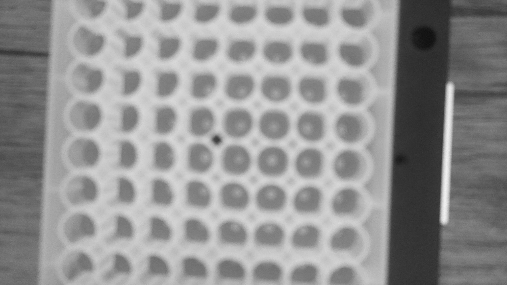
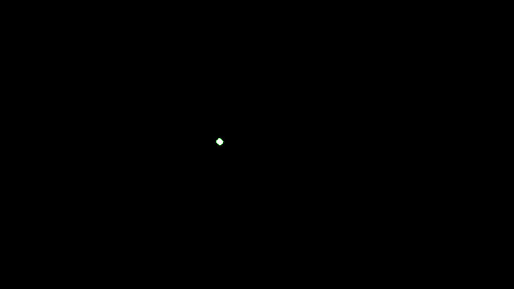
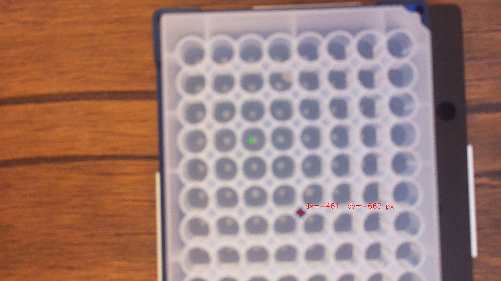
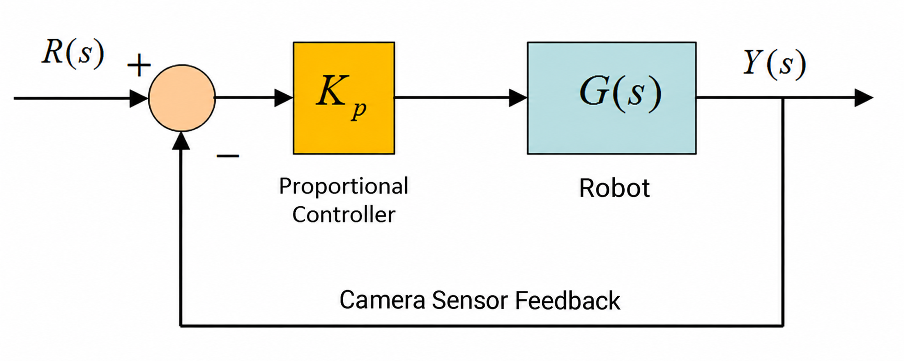
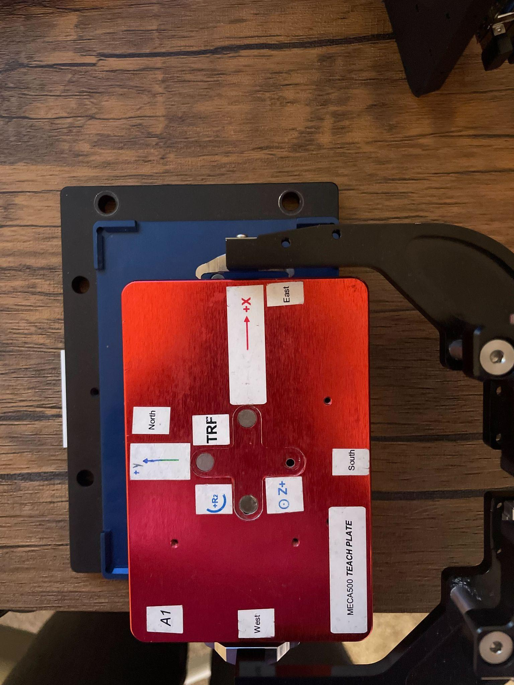
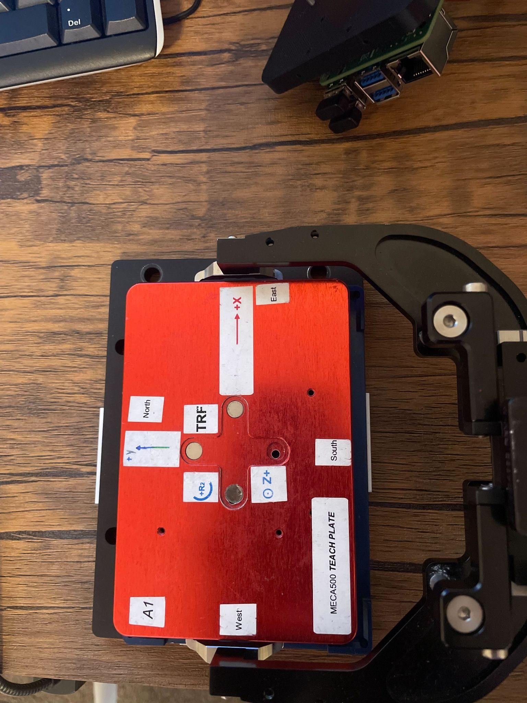

COMPUTER VISION · ROBOTICS
Robot Object Perception using Computer Vision
Camera vision was used to detect an object, locate its center, and move a robot to the object's center for grasping.

Overview
Camera vision was used to detect an object, locate the center of the object, and move the robot to the object's center for grasping.
The system combines a camera, Raspberry Pi, OpenCV image processing, MQTT communication, and proportional feedback control to guide a 6-DoF robotic arm toward the target.
Hardware
The following components were used in this project:
- 6-DoF robot arm
- Raspberry Pi microcontroller
- Camera
- Custom mounting designed in SolidWorks and 3D printed
- Mounting dowels
Camera Mounting Design
A custom camera mounting assembly was designed in SolidWorks and 3D printed for integration with the robotic system.


System Design
The system integrates computer vision, network communication, and feedback-based robotic motion.
- Image Acquisition: The camera takes an image every 5 seconds.
- Object Detection: The OpenCV algorithm analyzes the image, detects the object, and locates its center.
- MQTT Communication: Via MQTT protocol, messages containing the X and Y location of the object's center are published to a node.
- Proportional Control: A proportional controller determines how much to move the robot in X and Y based on camera sensor feedback.
- Robot Movement: A Python driver sends movement commands to position the robot at the center of the object.
Demo
Computer Vision
The OpenCV algorithm performs computer vision in the following steps.
- Image Recording: Records an image from the camera.
- Grayscale Conversion: Converts the captured image to grayscale.
- Object Detection: Detects the object within the image.
- Center Marker Detection: Identifies the center marker on the object.
- Distance Calculation: Calculates the X and Y displacement from the robot's camera reference location to the object's center, measured in pixels.




Proportional Controller
A proportional controller was implemented. The error between the robot's location and the center of the object was multiplied by a proportional gain to calculate the movement correction sent to the robot.
Control Equation

Where Kp is the proportional gain and position error is the displacement between the current robot camera position and the detected object center.
Control Process
- Measure Error: OpenCV calculates the X and Y positional offsets between the camera reference point and the detected object center.
- Calculate Correction: The positional error is multiplied by a proportional gain to determine the required movement correction.
- Command Robot: The Python robot driver sends movement commands based on the calculated correction.
- Update Feedback: The next camera image provides updated position feedback for the following correction.
Results
The system demonstrated camera-guided robotic alignment with approximately 2 mm residual X/Y alignment error.

